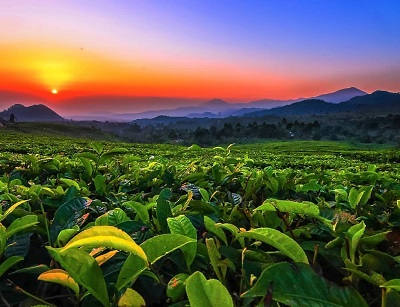
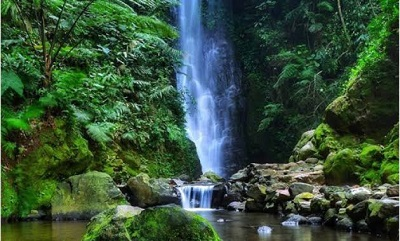

Subang Wisata
Sunrise Di Kebun Teh Ciater
Keindahan sunrise itu salah satunya berada dikebun teh ciater, kita tidak perlu jauh-jauh pergi ke pantai atau ke gunung untuk melihat keindahan sunrise.Tempat kebun tehnya kira-kira 1 KM setelah perempatan sari ater.
Taman Burung Sukamandi
Di subang Jawa Barat, bagian utara Kabupaten Kec. Sukamandi ada sebuah wisata yang bernama Taman burung, di taman tersebut ada berbagai burung, di sana burung itu tidak di sangkat atau di kurung melainkan di bebaskan. Waktu yang tepat untuk berkunjung di Taman Burung tersebut yaitu pada waktu sore hari di saat Burung-burung berkumpul, jadi kita bisa menikmati kicauan berbagai burung yang jarang kita temui, bagi pecinta burung bisa berkunjung di Taman Burung Sukamandi tersebut.
Curug cibareubeuy
Air terjun ini berada di desa cibeusi, kecamatan ciater. Curug cibareubeuy memiliki tinggi sekitar 40 meter dan memiliki kolam kecil dibawah yang bisa kita jadikan tempat mandi-mandi atau bermain air. Di sekitar curug cibareubeuy juga terdapat situs purbakal yang berjumlah 4 buah, areal bumi perkemahan dan hutan pinus. Selain itu, disekitar lokasi wisata banyak terdapat pengrajin gula aren yang dapat dinikmati langsung.
Curug Karembong Subang
Air Terjun ini mirip dengan karembong atau Selendang yang di geraikan, air terjun ini ternyata masih satu tempat dengan Capolaga Adventure Camp. Wisata curug karembong ini menempuh jarak sekitar 30 Menit dari Kota Subang. Untuk pembelian tiket masuk ke wisata tersebut anda cukup merogoh kocek sebesar Rp.9000 Rupiah saja, sekaligus dengan menyambangi Curug Sawer dan Curug Goa Badak, karena jarak Curug ke Curug lainnya itu sangat dekat.
Curug Mandala
Curug ini berlokasi di kampung panaruban, Desa Cidadas, Kec.Segalaherang. Curug mandala ini memiliki pesona menawan, seperti lokasi "bidadari mandi". Anda hanya merogoh kocek sebesar Rp.5000 Rupiah saja untuk menikmati air terjun tersebut.
Saung Mulan, Desa Cibuluh

Wisata yang bisa anda kunjungi yaitu wisata Saung Mulan, Saung Mulan merupakan wisata di malam hari yang bisa anda kunjungi. Disaat bulan purnama biasanya di saung itu mengadakan acara sederhana di mulai dari pagelaran seni seperti karinding dan kecapian, di saung tersebut hanya sekedar mengobrol atau di sebut ngawangkong, mereka biasanya hanya sekedar ngawangkong sambil bakar singkong dan pisang, dari saung tersebut ada pemandangan pedesaan dan juga sawah-sawah milik warga sekitar.
Gunung Canggah
Tempat wisata di Subang selanjutnya yaitu Gunung Canggah yang berada di Kecamatan Cisalak, untuk anda yang suka eksis, pemandangan di atas gunung ini sangatlah indah untuk anda berselfie. Tetapi sayangnya yang sudah terbiasa naik gunung saja yang di sarankan untuk mendaki Gunung tersebut.
Gracia SPA
Wisata yang satu ini sama saja dengan wisata yang sebelum-sebelumnya yaitu pemandian air panas, tetapi lokasinya agak berbeda yaitu anda akan melewati kampung sekitar 1.5 KM. Pemandian air panas ini terkenal privat,rimbunan pohon-pohon mengelilingi 3 kolam besar,terkesan sangat asri dan tersembunyi,di situ juga sudah di siapkan vila untuk pengunjung yang ingin menginap di Gracia SPA,jadi anda tidak perlu repot-repot membawa tenda atau alat perkemahan dari rumah.
Wisata Adventure Arung Jeram Singa Cipunagara

Olahraga ekstrim di sungai cipunagara itu salah satunya ada Arung Jeram, Olah raga ini menguji ketegangan kita saat mendayung perahu karet di sungai nanti. Salah satu sungai terpanjang di jawa barat yaitu sungai cipunagara,anda jangan khawatir karena olahraga ini di dampingi oleh skipper profesional.
Pemandian Tirta Alam Segalaherang
Kolam renang ini lokasinya di Kampung Cibinong Desa Segalaherang kaler Kec.Segalaherang. Kolam renang ini menyediakan berbagai aneka Wahana di dalamnya yaitu, ada sepeda air Angsa, air tumpah, prosotan air, kora-kora mini dan masih banyak lagi. Anda masih penasaran dengan wisata yang ada di pemandian Segalaherang? ayok tunggu apa lagi kita langsung kesana!.
Curug Dawuan
Curug Dawuan menjadi salah satu wisata di Kota Subang, air curug tersebut ternyata sangatlah sejuk dan segar karena curug tersebut berada di kawasan Kebun Teh. Lokasi Curug Dawuan berada di Kampung Dawuan, Desa Ciater, Kab.Subang.
Curug Goa Badak
Di dalam kawasan Adventure Camp ini masih ada wisata Curug Goa Badak, curug ini tingginya sekitar 8 meter, lokasinyapun berdekatan dengan Curug Karembong dan Curug Sawer. Jika anda ingin bermain di sana, itu sangatlah seru karena di sana itu airnya sangatlah segar dan apalagi tertimpa air terjun dari atas sana, itu sangat menyenangkan. Dan disana pun ada yang namanya Goda Badak yang memiliki ukuran lumayan besar. Gimana, anda tertarik bukan? jangan sungkan-sungkan untuk berwisata ke Curug Goa Badak tersebut.
Mata Air Cipondok
Apakah anda suka eksis di Media Sosial?, ada salah satu wisata di kota Sumedang yaitu Mata Air Cipondok. Dengan Objek wisata air yang bersih, rasa ingin tau para pengunjung akan membawa kita ke tempat Mata Air Cipondok, bagi anda yang suka selfie atau berfoto-foto, tempat yang cocok itu berada di Mata Air Cipondok, dengan keindahan bebatuan karangnya. Lokasi wisata tersebut berada di kampung Kasomalang Kab.Subang.
Pemandian Ciater Subang
Tempat pemandian ini berlokasi di sebelah utara dari Sari Ater, Ciater SPA juga memiliki fasilitas lainnya yaitu fasilitas terapi terpadu kesehatan dan kecantikan menggunakan air panas alami. Di dalam nya juga ada wahana yang menguji adrenalin kita yaitu Arung Jeram dengan air yang hangat, bagi yang takut untuk menaikinya tak perlu khawatir karena sungai ini bukanlah sungai yang besar.
Curug Sadim
Pesona alam di Curug Sadim ini sangatlah alami karena lokasi Curug Sadim ini di sekitar Perkebunan Teh, Curug ini akan menggoda anda agar anda berkunjung kesana, karena air curug ini sangatlah segar ketika air curug ini menimpa tubuh anda, apalagi disana ada bebatuan untuk duduk santai atau berselfie dengan keindahan Curug Sadim. Lokasinya berada di Dusun Penaruban, Desa Cidadas, Kec.Segalaherang, Kab.Subang Jawa Barat.
Wisata air panas ciater “sari ater hot spring resort”

Sari ater hot spring resort atau lebih dikenal dengan obyek wisata air panas dan air ajaib ciater, ini berlokasi di kawasan pegunungan subang jabar, di kaki gunung tangkuban perahu, tepatnya didesa ciater , kecamatan ciater, kab.subang. Sumber air panas ciater ini, langsung berasal dari gunung tangkuban perahu, dan pemandian ini memiliki luas sekitar 30 ha. Sari ater hot spring resort juga memberikan fasilitas wisata bagi para wisatawan yang berekreasi bersama keluarga.
Wisata kawah gunung tangkuban perahu
Objek wisata kawah gunung tangkuban perahu berada di ketinggian 2084 m DPL. Karena pesona keindahan kawah dan pemandangan dari ketinggian, membuat wisatawan datang untuk berkunjung kemari baik itu keluarga, sahabat, maupun bersama pasangan. Fasilitas kawah gunung tangkuban perahu yaitu Cafetaria dan pusat informasi (TIC), Toko cinderamata, Homestay, Area outbound, Area parkir, Area berkuda, Warung warung souvenir, dan Camping ground.
Desa wisata sari bunihayu
Desa ini terletak di selatan kota subang jawa barat, dengan ketinggian antara 500-1700 dari permukaan laut, luasnya sekitar 3 ha dan berdiri pada tahun 2002. Desa wisata ini memiliki konsep wisata alam dan budaya (seni dan tradisi). Dengan suasana pedesaan yang asri serta keindahan alam yang menawan akan membuat anda merasa nyaman dan tentram sehingga membuat kita lebih rileks. fasilitas yang ada di wisata sari bunihayu adalah 11 villa dengan harga sekitar Rp.300.000- Rp.1.100.000, Kolam ikan ukuran (10 m x 20 m) 1 buah, Kolam renang ukuran (8 m x 16 m) 1 buah, Rumah makan, Ruangan rapat, Mushola, Play ground, Taman buah ( buah durian ), Tempat souvenir, Outbound land, Tempat rekreasi anak, Kamar mandi kapasitas 10 kamar, dan Tempat parkir kapasitas 40 mobil
Peternakan buaya di blanakan subang
Penakaran buaya blanakan ini terletak diwilayah kab.subang bagian utara, tepatnya di jalur pantura. Penangkaran buaya ini memiliki luas sekitar 1,5 ha, dari luas total 8 ha wilayah hutan tegal tangkil yang dikelola oleh PT. Perhutani. Kurang lebih ada 200 ekor buaya di penangkaran buaya ini. Fasilitas wisata penangkaran buaya blanakan yakni terdapat terminal perahu, arena bermain anak, warung-warung makan, dan area parkir.
Pantai pondok bali subang
Pantai ini berada di desa mayangan kecamatan legonkulon kab. Subang,jawa barat. Pantai ini memiliki hamparan pasir yang membentang di pesisir laut pantai utara menjadikan ciri khas wisata pantai ini. Fasilitas di pantai pondok bali subang ini yaitu terminal perahu, area voli pantai, dan arena bermain anak.
Desa wisata wangunharja
Obyek Wisata Desa Wisata Wangunharja di Sanca Subang Jawa Barat adalah salah satu tempat wisata yang berada di Sanca, Jalancagak, Sanca, Subang, Kabupaten Subang, Jawa Barat 41281, Indonesia. Destinasi wisata keluarga ini menawarkan kultur budaya serta adat istiadat dan kebudayaan yang masih kental yang sampai sekarang adat istiadatnya masih terus dilaksanakan. Setiap tahunnya didesa tersebut selalu diadakan acara pesta rakyat yang biasa disebut dengan ruatan bumi yang telah dikemas dalam suatu paket wisata. Fasilitas di desa wisata wangunharja ini yaitu homestay, area palkir, dan warung.
Curug bentang
Lokasi curug bentang berada di kampung adat banceuy, desa wisata wangun harja, kecamatan ciater. Curug ini terdapat di sebuah aliran sungai besar yang membelah desa tersebut. Terdapat dua buah curug yang terlihat bertingkat jika dilihat dari atas sungai tersebut. Namun karena berada di aliran sungai besar, cukup berbahaya jika kita bermain air di bawah curug, kecuali jika anda pandai berenang. Nah, disekitar air terjun ini juga ada makam keramat seperti makam aki leutik (raden ismail saleh), makam prabu jaya tumenggung, dan makam eyang haji pungkur (haji singadiraksa). Didesa wisata ini setiap tahun diadakan upacara adat ruwatan bumi.
Kolam renang ciheuleut
Kolam renang ciheuleut berada di jln. Terusan emo kurnia atmadja BTN ciheuleut kel. Pasirkareumbi subang. Dena luas area sekitar 2 hektar, kolam renang ciheuleut memiliki konsep wisata terpadu. Di kolam renang ciheuleut memiliki banyak fasilitas diantaranya adalah Memiliki 3 kolam renang ukuran : (15 x 25 m, 15 x 10 m, dan 10 x 8 m), Kamar bilas : 2 kamar, Kamar ganti : 6 kamar, Kamar mandi : 3 kamar, Kolam ikan : 1 kolam, Outbound, Tempat parkir yang luas, Mushola, Warung, dan Memiliki 14 karyawan.
Ciater highland resort
Objek wisata ini berlokasi di jalan raya subang-bandung, kecamatan ciater, subang. Lokasinya ada di kawasan ciater highland resort yakni ditengah hamparan kebun teh yang luas. Arena pacuan kuda disini cukup luas dan memiliki fasilitas yang lengkap. Selain arena pacuan kuda, wisatawan juga bisa menikmati keindahan alam perkebunan teh atau kegiatan rekreasi lain yang menarik. Ada banyak fasilitas di CHR seperti : villa berbagai tipe, kolam renang, family karaoke, camping ground, restaurant, gym, biliard, futsal, grass hill dan berbagai fasilitas pelengkap lainnya.
Capolaga adventure camp
Capolaga adventure camp ini berlokasi di desa cicadas panaruban, kecamatan sagalaherang kab. Subang. Objek wisata ini menawarkan keindahan ekosistem sungai cimuja yang unik dan mempesona yaitu berupa air terjun cimuja, air terjun karembong dan air terjun sawer yang dikelola secara kaidah alam. Selain air terjun yang indah objek wisata ini pun dapat ditemui gua-gua, salah satunya yaitu gua badak. Fasilitas yang ada di Capolaga Adventure Camp yakni terdapat Out bound, Outing, Family atau company gathering, Adventure sport, Tarcking dan bird watching, Tea walk, Lahan perkemahan, Photography, dan Kolam memancing ikan.
Curug agung / batu kapur
Lokasi tempat wisata curug agung / batu kapur berada didesa curug agung kecamatan sagalaherang. Berdasarkan pengalaman para pengunjung yang datang untuk berendam di kolam air panas di pemandian batu kapur, dipercaya sebagai air terapi yang dapat menyembuhkan berbagai macam penyakit kulit seperti gatal-gatal dan sebagainya. Disekitar curug ini juga sudah dikembangkan berbagai fasilitas lain seperti pondokan (tempat menginap), tempat rekreasi anak-anak, area perkemahan dan tempat rumah makan.
Curug cileat subang
Lokasi curug cileat subang ini berada di kecamatan cisalak kab.subang jawa barat, dengan ketinggian curug ± 100 m di atas permukaan laut, ditambah udaranya yang sejuk dan kemunculan pelangi-pelangi kecil yang memantul dari air terjun saat matahari pagi. Di curug ini anda juga bisa melakukan camping. Dan untuk menuju curug cileat ini kita harus berjalan beberapa kilometer. Lokasi curug cileat subang ini berada di kecamatan cisalak kab.subang jawa barat, dengan ketinggian curug ± 100 m di atas permukaan laut, ditambah udaranya yang sejuk dan kemunculan pelangi-pelangi kecil yang memantul dari air terjun saat matahari pagi. Di curug ini anda juga bisa melakukan camping. Dan untuk menuju curug cileat ini kita harus berjalan beberapa kilometer.
Pantai kalapa patimban
pantai kalapa patimban terletak di Dusun patimban, daerah Desa patimban, wilayah kecamatan pusakanagara, kabupaten subang-Jawa Barat. Karena di sepanjang pesisir pantai ini banyak tumbuh deretan pohon kelapa, masyarakat sekitar banyak yang menyebut tempat ini dengan sebutan pantai kelapa. Disini kita dapat bermain bola volly , sepakbola, memancing, dan pasirnya yang lembut membuat anda leluasa untuk beraktifitas bersama keluarga. Di pantai kalapa patimban juga menyediakan sky boat dan perahu yang dapat disewa oleh para pengunjung dengan harga yang terjangkau.
Curug cijalu
Curug cijalu berada di desa cipancar, kecamatan serang panjang, kabupaten subang. Air terjun dengan ketinggian sekitar 70 meter ini terletak di camping ground di bawah hutan pinus. Selain curug cijalu, juga ada dua curug lainnya disekitarnya yaitu curug putri dan curug cilemper. Lokasi curug putri berjarak sekitar 100 meter saja dari curug cijalu sementara untuk curug cilemper berada sekitar 500 meter dari curug cijalu.